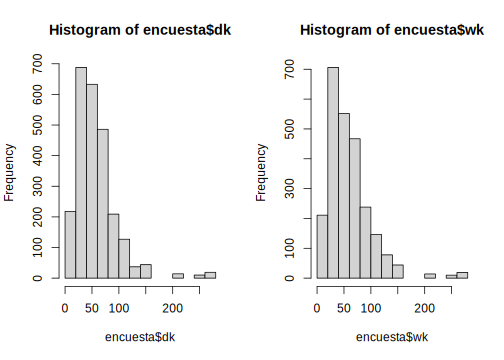
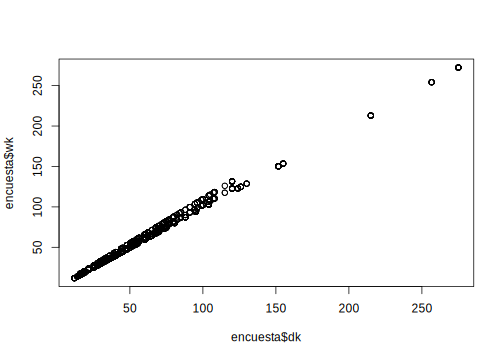

2.9 Calibrando con R
La calibración es un ajuste que se realiza a los pesos de muestreo con el propósito de que las estimaciones de algunas variables de control reproduzcan de forma perfecta los totales poblacionales de estas variables (Sarndal, 2003). Esta propiedad de consistencia es deseable en un sistema de ponderadores. En este sentido, cuando los estudios por muestreo están afectados por la ausencia de respuesta, como en muchos casos pasa en las encuestas de hogares, es deseable tener las siguientes propiedades en la estructura inferencial que sustenta el muestreo:
- Sesgo pequeño o nulo.
- Errores estándares pequeños.
- Un sistema de ponderación que reproduzca la información auxiliar disponible.
- Un sistema de ponderación que sea eficiente al momento de estimar cualquier característica de interés en un estudio multipropósito.
La calibración es usualmente el último paso en el ajuste de los ponderadores. Hace uso de información auxiliar que reduce la varianza y corrige los problemas de cobertura que no pudieron ser corregidos en los pasos previos.
Puesto que el estimador de calibración depende exclusivamente de la información auxiliar disponible, esta información puede aparecer en diversas formas:
Puede estar de forma explícita en el marco de unidades. \(x_k \ (\forall \ k \in U)\)
Puede ser un agregado poblacional proveniente de un censo o de registros administrativos. \(t_x = \sum_U x_k\)
Puede ser una estimación poblacional \(\hat{t}_x = \sum_s w_kx_k\) muy confiable.
Particularmente, en encuestas de hogares, existen conteos de personas disponibles a nivel de desagregaciones de interés. Por ejemplo, número de personas por edad, raza y género que se permite utilizar como información auxiliar para calibrar las estimaciones.
La necesidad de calibrar en las encuestas de hogares es porque no todos los grupos de personas se cubren apropiadamente desde el diseño de muestreo. Además, las estimaciones del número de personas en estos subgrupos son menores a las proyecciones que se tienen desde los censos. Por último, al ajustar los pesos para que sumen exactamente la cifra de los conteos censales, se reduce el sesgo de subcobertura.
Para ejemplificar el estimador de calibración en R usando la base de datos de ejemplo se utilizarán la función calibrate del paquete survey. En primer lugar, para poder calibrar se requiere construir la información poblacional a la cual se desea calibrar. En este ejemplo se calibrará a nivel de zona y sexo. Por tanto, los totales se obtienen como sigue:
library(survey)
totales <- colSums(
model.matrix(~ -1 + Zone:Sex, BigCity)) En la salida anterior se puede observar que, por ejemplo, en la zona rural hay 37238 mujeres mientras que en la urbana hay 41952. De igual manera se puede leer para el caso de los hombres.
Una vez obtenido estos totales, se procede a utilizar la función calibrate para calibrar los pesos de muestreo como sigue:
diseno_cal <- calibrate(
diseno, ~ -1 + Zone:Sex, totales, calfun = "linear") Luego de que se hayan calibrado los pesos se puede observar que, al sumar los pesos calibrados estos reproducen el total poblacional de la base de ejemplo.
sum(weights(diseno_cal))## [1] 150266encuesta$wk <- weights(diseno_cal)Dado que uno de los principios de los pesos calibrados es que dichos pesos no sean muy diferentes a los pesos originales que provienen del diseño de muestreo, se puede observar a continuación, la distribución de los pesos, sin calibrar y calibrados respectivamente.
par(mfrow = c(1,2))
hist(encuesta$dk)
hist(encuesta$wk)
plot(encuesta$dk,encuesta$wk)
Region <- as.numeric(
gsub(pattern = "\\D",
replacement = "", x = encuesta$Stratum))
encuesta$Region <-
cut(Region, breaks = 5,
labels = c("Norte","Sur","Centro","Occidente","Oriente"))
encuesta %<>% mutate(
CatAge = case_when(
Age <= 5 ~ "0-5",
Age <= 15 ~ "6-15",
Age <= 30 ~ "16-30",
Age <= 45 ~ "31-45",
Age <= 60 ~ "46-60",
TRUE ~ "Más de 60"
),
CatAge = factor(
CatAge,
levels = c("0-5", "6-15", "16-30", "31-45",
"46-60", "Más de 60"),
ordered = TRUE
)
)
saveRDS(object = encuesta, file = "../Curso Tellez/Data/encuesta.rds")